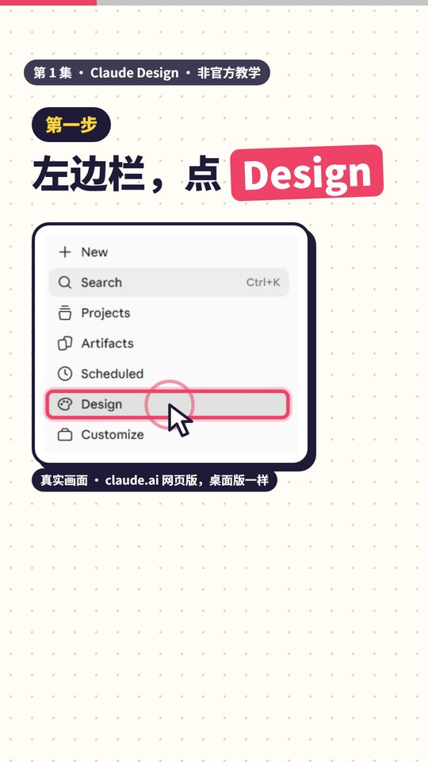
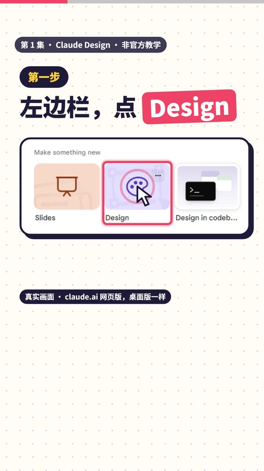
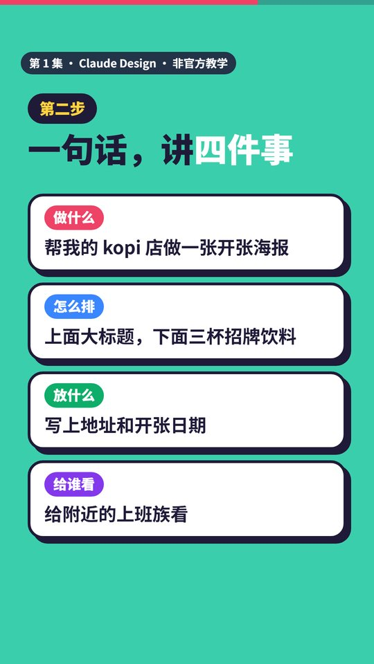
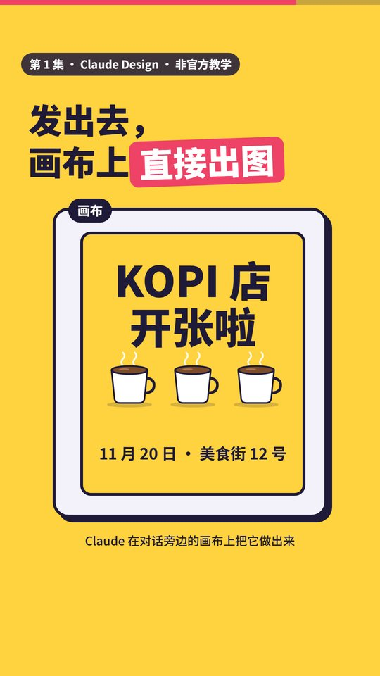
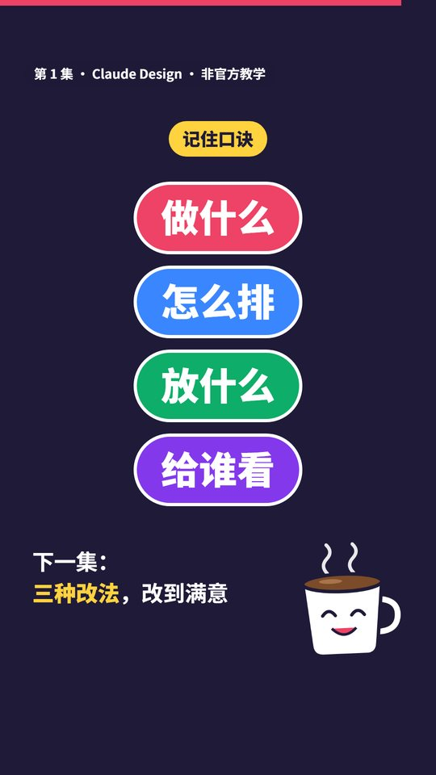

第 1 集 · Claude Design 怎么开始
一句话： 不会设计也能出图。打开 Claude 的 Design，再用一句话讲清四件事。
对照官方文档和真实界面核对日期：2026-11-11 ｜ 时长 50 秒 ｜ 非官方教学
跟着做
第一步：打开 Design（视频 00:09）
两种方法，选一个：
- 在 Claude 左边栏点 Design，再在"Make something new"里点 Design 这张卡。
- 懒得点就直接打字，比如"帮我设计一张海报"。
左边栏没看到 Design？点 Artifacts，再选 Design 模板，或者直接打字。


第二步：一句话，讲四件事（视频 00:16）
| 讲什么 | 意思 | 例子 |
|---|---|---|
| 做什么 | 你要的东西 | 帮我的 kopi 店做一张开张海报 |
| 怎么排 | 版面怎么摆 | 上面大标题，下面三杯招牌饮料 |
| 放什么 | 要出现的内容 | 写上地址和开张日期 |
| 给谁看 | 谁会看到它 | 给附近的上班族看 |

第三步：发出去（视频 00:34）
Claude 会在对话旁边的画布上把它做出来。

视频里的海报是示意图，实际样子以 Claude 做出来的为准。
直接复制
帮我的 kopi 店做一张开张海报。上面是大标题，下面排三杯招牌饮料。
写上地址和开张日期。这张海报是给附近的上班族看的。
把店名、内容换成你自己的就能用。
口诀
做什么、怎么排、放什么、给谁看。

时间点
| 时间 | 内容 |
|---|---|
| 00:00 | 不会设计？Claude 帮你画 |
| 00:03 | 老板要海报，你对着设计软件发呆 |
| 00:09 | 第一步：左边栏点 Design，或直接打字 |
| 00:16 | 第二步：一句话讲四件事 |
| 00:34 | 发出去，画布上出图 |
| 00:40 | 口诀，下一集预告 |
顺便知道
- Free、Pro、Max、Ultra、Team、Enterprise 方案都能用，默认开启。
- 官方说明里还提到在输入框选 Output → Design，但 2026-11-11 我们在 claude.ai 网页版的输入框里没有找到这个选项，所以视频改教左边栏的入口。
- Claude Code 里用
/design。 - 独立版 claude.ai/design 会在 2026 年 12 月 14 日关闭，之后都在 Claude 里用。
- 第一版不满意很正常。下一集讲三种改法：聊天改、点着改、直接拖。
来源：Claude 帮助中心《Get started with Claude Design》 https://support.claude.com/en/articles/14604416-get-started-with-claude-design